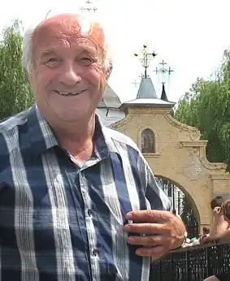

Євген Іванович Шморгун (нар. 15 квітня 1940, с.Новожуків, Рівненська область) – письменник, видавець, краєзнавець, громадський діяч, лауреат премій імені Лесі Українки, Володимира Кобилянського, Валер'яна Поліщука, лауреат просвітянської премії імені Григорія Чубая, премії імені Леоніда Куліша-Зіньківа в галузі дитячої літератури, Заслужений журналіст України.
Вся гострота бачення краси нашої природи розвивалася в письменника ще в дитинстві. Євген Іванович із села — він побачив світ 15 квітня 1940 року в селі Новожукові, що на Рівненщині, в сім'ї простого селянина. Навчався в Новожуківській початковій школі. А оскільки село лежить поблизу давньоруського пересопницького городища, то з дитячих літ таємничі перекази, пов'язані з ним, будили уяву письменника, викликали бажання більше знати про минувшину свого краю. Семирічку закінчив у сусідньому селі Пересопниці — древній столиці удільного князівства ХІІ століття, в селі, де в ХVІ столітті творилася українська першокнига — Пересопницьке Євангеліє, — на якому присягають на вірність народові України її президенти. З роками письменник раз у раз повертався в це село, черпаючи натхнення, а вже в зрілому віці, 1990 року, організував відкриття у Пересопниці пам'ятного знака задля увічнення священної книги, визначної пам'ятки староукраїнської мови та мистецтва. Середню освіту майбутній письменник здобув у селі Білеві, потім навчався в Дубенському медичному училищі, де отримав диплом фельдшера. Працював фельдшером, служив в армії, після армії вступив на філологічний факультет Рівненського педінституту, жив цікавим і насиченим літературним життям. Ще в студентські роки він зі своїми публікаціями вийшов на сторінки літературно-художнього журналу "Вітчизна", щорічника "День поезії". Головною темою наукових зацікавлень молодого філолога стала творчість Валер'яна Поліщука, який починав повертатися до читача в час так званої "хрущовської відлиги". Потім — журналіст, керівник Рівненського обласного літоб’єднання і відповідальний секретар Рівненської організації Національної спілки письменників України. Багато пише для дітей та юнацтва. Автор роману "Сніги непочаті" про середньовічну Волинь, повістей на античну тематику, оповідань та віршів про природу і рослинний світ Рівненщини. Літературну діяльність розпочав на початку сімдесятих років, коли в журналі "Барвінок" з'явилося його оповідання "Грім". Невдовзі виходять книжки для дітей: "Зелені сусіди" (1978), "Що шукала білочка", "Дивосил-зілля" (1980), "Що сказав би той хлопчик" (1981), "Де ночує туман" (1984). Етапним у житті ще початкуючого письменника став 1978 рік: У київському видавництві "Веселка" були випущені відразу дві його книжки оповідань для дітей — "Що шукала білочка" і "Зелені сусіди". Перші збірки визначили основне спрямування творчості Євгена Шморгуна — писати для тих, хто ще не навчився читати, а також для молодших школярів, навчати їх розуміти природу, прищеплювати їм співчутливість, потяг до знань. Вибравши одного разу своєю основною темою природознавство, Євген Шморгун розширює діапазон зацікавлень від книжки до книжки. Важливою віхою в його творчій біографії стала чудово видана книжка "Дивосил-зілля" (1980) з гарними ілюстраціями Євгена Попова та Михайла Усова. Жанр сформульовано так: "Оповідання про рідкісні рослини". "Це напрочуд вдалий сплав художньої і науково-популярної літератури, який подекуди вже й називають науково-художньою. І це тим більш радісно, що маємо вже третю книжку журналіста, яка засвідчує: у літературу прийшла людина зі своєю темою, своїм баченням світу", писав О.Єфімов. З 1984 року Є.Шморгун — член Спілки письменників України, керівник літоб'єднання при редакції газети "Зміна". З 1989 по 2000 роки очолював Рівненську обласну організацію Національної Спілки письменників України. У 1989 р. львівське видавництво "Каменяр" випустило збірку "Вогник-цвіт", а видавництво "Веселка" – повість про Гомера "Дорога до Іліона". Є.Шморгун своєю повістю "Дорога до Іліона" ставить багато запитань — і не дає однозначних відповідей. Притча ніяк не бажає вкладатися в причинну зумовленість усіх явищ природи, суспільства й мислення, що сьогодні іменуємо детермінізмом. Адже співець-поет наприкінці повісті трохи по-іншому оцінює хиткий, непевний світ: він існує для кожної людини "доти, доки існує її — тільки її острів. Не має значення, якої він величини. Бо ніде більше немає такої трави, такої криниці, такого тепла, як на твоєму острові". Оцінюючи повість, відомий критик Михайло Слабошпицький у "Літературній панорамі" 1990 року писав: "Справді висока питома вага слова і самого автора, і його персонажів... Це твір нової літературної якості в творчості самого Є.Шморгуна, а також у нашій прозі, тематично пов'язаній із осмисленням минулого". З подорожніх нотаток складалися книги, серед яких –"Мова зела" де, за свідченням самого автора, зібрано "оповідання про рослинну символіку українського народу". Євген Шморгун разом з відомим травознавцем на просторах Полісся Носалем І.М. виявив рідкісні рослини, позначивши на карті місця, де вони збереглися, аби забезпечити їх захист. У "Мові зела" зачаровує не стільки романтизація рослинного світу, що нас оточує, скільки заглибленість у фольклорний масив легенд, переказів, повір'їв, замовлянь, обрядів, пісень. При цьому впадає у вічі великий обсяг опрацьованої автором літератури з археології, історії дохристиянських часів, образотворчого мистецтва, ботаніки, простежено, як рослинна символіка зринає у творах українських письменників (Тарас Шевченко, Григорій Квітка-Основ'яненко, Іван Драч та ін.). Свій задум книжки Євген Шморгун пояснив так: "В українців за віки склалася багата рослинна символіка. Вона зросла і розквітла не на запозиченнях, а на ґрунті власного світобачення і власної художньої творчості. І це є ще одним свідченням самобутності нашого народу, древності його витоків, глибинності його коренів". У 2000 році Євгенові Шморгуну було присуджено одну з найпочесніших письменницьких відзнак України — державну премію імені Лесі Українки. Таку високу оцінку дістала книжка "Мова зела", яка стала свого роду підсумковою у більш як сорокарічній творчій діяльності письменника. Адже весь цей час однією з визначальних його тем була тема малодослідженого рослинного світу Рівненщини, неповторної краси рідного краю. З такою глибокою обізнаністю, з таким прозорим, зворушливим ліризмом про це до Є.Шморгуна, здається, не писав ніхто. Хоч Євген Шморгун більше відомий як прозаїк, що пише про природу для читачів шкільного віку, все ж час від часу пробував сили у творах із більш розгорнутим сюжетом, ширшим охопленням подій із життя головного персонажа (повісті "Дорога до Іліона", "Плач перепела", "Криниця в бережку"), написав драму "Кличу живих!", усе життя вважає за потрібне висловлювати ліричні почуття і у віршах (збірка "Вірші різних років"), часто звертається до публіцистики. Повість "Плач перепела" (1998), одна серед більш масштабних творів прозаїка, стала чи не першою в українській літературі спробою правдиво відобразити сповнене драматизму життя західноукраїнського населення у перші повоєнні роки. Письменник із неабиякою психологічною точністю показав не тільки світоглядні, але й морально-духовні побудники, спонукальні чинники поведінки своїх героїв. Майже всі вони — люди позитивних якостей, але як же важко зберігати їм гідність, опинившись перед необхідністю або прийняти правила поведінки антигуманних правителів, або стати на шлях неприйняття режиму і навіть боротьби з ним. Деякі твори Євгена Шморгуна включено в підручники для школярів молодших класів. Вони формують підростаюче покоління, запам'ятовуються, западають у душу, адже в них іде мова про те, що так співзвучне дитячому світовідчуттю. У 2008 р. у видавництві "Азалія" (Рівне) налагоджено випуск тритомника вибраних творів Є.Шморгуна. У 2009 році на світ народився третій том його творів. 1 том базується на основних розділах — книгах: "Забуті боги предків" ,"Мова зела", "Зелені сусіди", "Ключ-трава", "Казочки-розказочки", "Тиха радість". 2 том базується на повісті "Дорога до Іліона", повісті "Не повтори мене", роману "Сніги непочаті", п'єси "Кличу живих", есе "Шість століть Велигорських". Як редактор видавництва "Азалія" Євген Іванович благословив у світ книги кількох десятків авторів, зокрема і молодих, відкрив нові імена на літературній карті області. Був серед засновників літературно-краєзнавчого журналу "Погорина", що його випускає Рівненська письменницька організація. Як голова редакційно-видавничої групи з випуску серії книг "Реабілітовані історією" підготував видання про складні сторінки в історії Західної України, долю маловідомих борців за незалежність України. Письменник не обмежується літературною діяльністю. Він — відомий на Рівненщині видавець, дослідник творчості Валер'яна Поліщука, Бориса Тена, Уласа Самчука. Збираючи матеріали про діяльність на Рівненщині Української повстанської армії, про репресії сталінської влади, опублікував близько 20 збірників документів, випустив нарис "Рано-вранці вітри заголосять..." — про талановиту родину Кульчицьких, члени якої брали участь у національно-визвольній боротьбі, пройшли через Дантові кола пекла сталінських репресій. Такого роду факти письменник осмислював і у своїх художніх творах, наприклад, у повісті "Плач перепела". До 60-річчя від дня народження Євгена Шморгуна, яке відзначалося в 2000 році, рівненське видавництво "Азалія" випустило невелику за обсягом книжку Григорія Дем'янчука "Євген Шморгун. Літературний портрет". Тут подано біографію письменника, представлено його книжки — про це говорять самі назви розділів: "Знайомтесь: "зелені сусіди", "Мандри з Носалем: пошуки дивосилу", "Поетичні аспекти "прози життя", "Вірші різних років". Наприкінці книжки вміщено бібліографію видань Євгена Шморгуна, публікації про його творчість. Інформацію про творчість Є.Шморгуна містять періодичні видання.